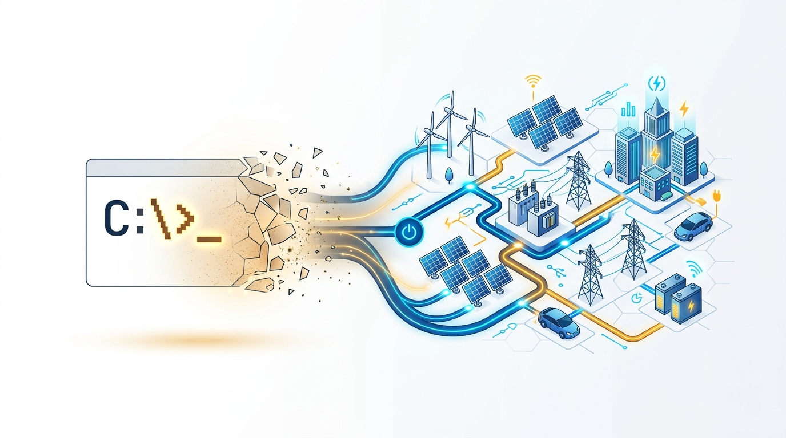
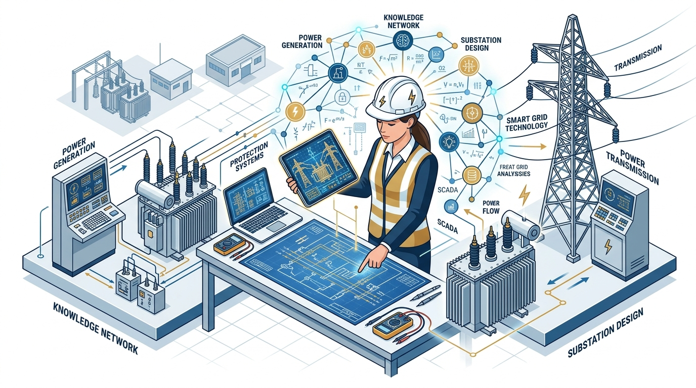
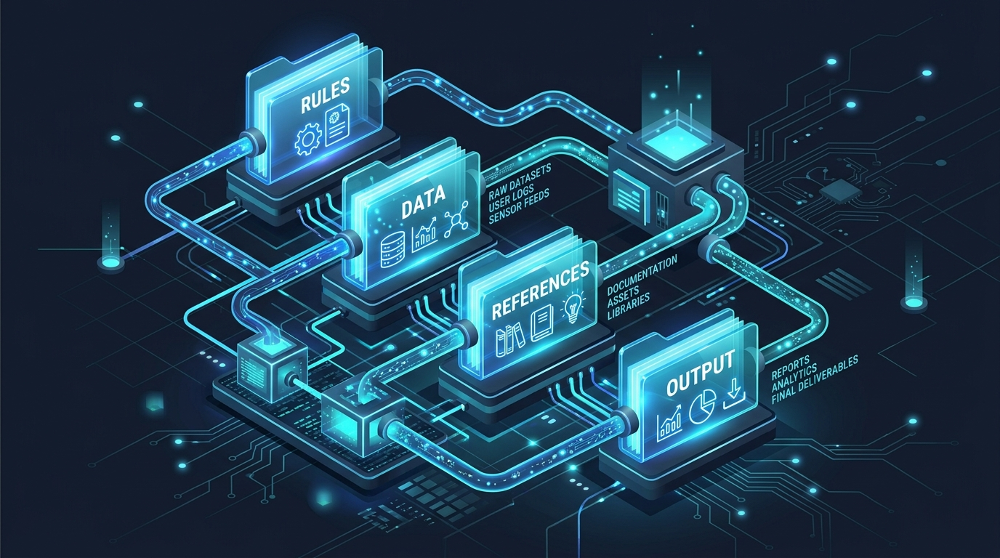

과정 A · 한국전력공사 특강 · 총 120분 사례 중심 강연형
생성형 AI 시대의 일하는 법
"프롬프트의 시대는 끝났다. 남는 것은 도메인 지식이다"
조성호 · KODE KOREA 대표 · 부산대학교 AI융합교육원 강사 · 상시 라이브 데모
반갑습니다. 생성형 AI 시대, 말솜씨가 아닌 일하는 방식 자체를 바꾸는 2시간의 여정을 시작하겠습니다.
청중 진단 · 즉석 조사
지금 쓰고 계신 도구와
가장 답답했던 막힌 지점
챗GPT, 코파일럿을 써봤지만 결국 복사·붙여넣기로 돌아오는 현실.
"업무에 쓰려니 뻔한 말만 나오고, 사내 서식에 맞추느라 손이 더 간다" — 왜 그럴까요?
참석자들이 현업에서 겪는 AI 사용의 한계와 피로감을 즉석에서 묻고 진단합니다.
라이브 데모 ① · 여는 시연
말 한 마디로 끝나는 일.
공개 자료 5건에서 결재 초안까지.
공개 데이터 5건 투입 ➔ 핵심 비교 분석 ➔ 요약 도표 생성 ➔ 공기업 표준 1장 보고서 초안 완성.
사람이 복사-붙여넣기하지 않고, 에이전트가 단 한 번의 지시로 완주합니다.
실제 라이브 화면으로 전환하여 5건의 데이터를 한 번에 보고서로 취합하는 데모를 시연합니다.
오늘 2시간의 핵심 프레임
"AI를 배운다"가 아니라,
"일하는 방식을 바꾼다"
프롬프트 단어 몇 줄 바꾸는 팁을 배우는 자리가 아닙니다.
업무의 자료, 규칙, 도구, 검증 루프를 설계하여 AI에게 일을 완벽히 위임하는 패러다임의 전환입니다.
도구 학습이 아닌 업무 설계 패러다임 전환임을 선언합니다.

PART 1 · 25분
프롬프트의 시대는 끝났다
1세대 프롬프트 엔지니어링 ➔ 2세대 컨텍스트 ➔ 3세대 하네스 엔지니어링
1부에서는 프롬프트가 왜 끝났는지, 하네스와 바이브코딩이 왜 등장했는지 설명합니다.
엔지니어링의 진화
AI를 부리는 3세대의 패러다임 진화
1세대 · 과거
프롬프트 엔지니어링
"너는 최고의 전력 전문가다..."
마법의 문장 찾기와 미사여구 프롬프트에 매달리던 시대 (이미 종말).
2세대 · 과도기
컨텍스트 엔지니어링
검색 증강(RAG), 긴 규정 문서 주입.
질문과 관련된 문서 조각을 찾아 모델에 먹여주던 방식.
3세대 · 현재와 미래
하네스 엔지니어링
자료 + 규칙 + 도구 + 검증 루프.
문장이 아니라, 에이전트가 오차 없이 달릴 수 있는 '작업 환경' 자체를 구축.
1세대에서 3세대 하네스로 넘어온 엔지니어링 역사를 짚습니다.
패러다임의 본질
왜 끝났는가.
모델이 알아서 하기 때문입니다.
최신 AI 모델은 대충 말해도 문맥과 의도를 정확히 파악합니다.
업무의 병목은 이제 '문장 표현력'이 아니라, '무엇을 줄 것인가(입력 자료·규칙)'와 '어떻게 검증할 것인가(평가지표)'로 완전히 옮겨갔습니다.
프롬프트 테크닉의 무의미함과 병목의 이동을 설명합니다.
작업 환경의 설계
컨텍스트 = 자료 + 규칙 + 도구 + 검증 루프
1. 자료 (Data)
과거 통과된 기안문, 취합 엑셀, 사내 전산 데이터 원본
2. 규칙 (Rules)
부서 전결 규정, 개조식 작성 원칙, PII 마스킹 보안 지침
3. 도구 (Tools)
브라우저 자동 조작, 사내 DB 조회, 파일 읽기/쓰기 권한
4. 검증 루프 (Loop)
정량 합격 채점표, 에이전트 자가 수정, 감사관 적대적 검증
마법의 문장을 쓰는 것이 아니라, 에이전트가 일할 작업 환경(Harness)을 설계합니다.
컨텍스트를 구성하는 4대 기둥을 명확히 정의합니다.
대조 데모 · 현장 검증
같은 요청, 컨텍스트 유무에 따른 결과의 격차
컨텍스트 없이 요청했을 때 (일반 챗봇)
"이 자료 취합해서 보고서 써줘"
인터넷 백과사전식 뜬구름 요약. 사내 서식 위반, 핵심 지표 누락, 결국 사람이 처음부터 다시 작성.
컨텍스트를 갖추고 실행했을 때 (하네스 에이전트)
[규칙 파일 + 레퍼런스 양식 + 검증표] 제공
선배 기안문과 100% 동일한 개조식 서식, 수치 정합성 검증 완료, 결재선 통과 수준 기안 완성.
실제 브라우저 화면에서 컨텍스트 유무에 따라 결과물이 완전히 갈라지는 모습을 실시간 대조 시연합니다.
새로운 일하는 법
바이브코딩이란 무엇인가.
만드는 사람이 아니라, 시키고 검수하는 사람.
코드를 직접 짜지 않습니다.
업무의 의도와 기준(Vibe)을 던지고, AI가 만들어온 결과물을 검수·승인하여 내 손으로 작동하는 업무 도구를 구축합니다.
바이브코딩의 진정한 정의(지시자와 검수자로서의 역할)를 공유합니다.

PART 2 · 30분
도메인 지식이 진짜 자산이다
모델이 주는 건 일반해, 여러분이 가진 건 특수해 — 강사 직접 수행 프로젝트 3선
2부에서는 실제 산업 프로젝트 사례 3가지를 통해 도메인 지식의 결정적 역할을 확인합니다.
대체 불가능성의 원천
모델이 주는 건 일반해,
여러분이 가진 건 특수해
대체되는 것은 '검색 가능한 일반 지식'이고,
끝까지 남는 것은 현장의 '맥락 판단'과 '도메인 지식'입니다.
AI의 범용성과 현장 실무자의 특수성이 결합하는 지점을 짚습니다.
강사 프로젝트 사례 ①
부산디자인진흥원
공공디자인 진단 시스템
핵심: 수십 년 경력 공공디자인 심의위원들의 정성적 평가 기준과 채점 프로토콜을 시스템에 이식.
현장 사진을 넣으면 전문가 시각에서 위험 요인과 법적 기준 부합도를 즉시 평가. 기술보다 전문가의 평가 체계 설계가 프로젝트의 성패를 갈랐습니다.
부산디자인진흥원 실제 수행 프로젝트를 통해 전문가 기준 시스템화 사례를 설명합니다.
강사 프로젝트 사례 ②
제조 기업 프라이빗 AI 어시스턴트
기술적 인프라보다 중요했던 것
최신 모델을 도입하는 것은 누구나 할 수 있습니다.
진짜 핵심은 "그 회사만의 고유한 데이터 보안 규칙"이었습니다.
· PII(개인식별정보) 자동 마스킹 필터
· 직무 권한별 사내 문서 접근 스마트 라우팅
도메인 규칙의 승리
사내 보안 컴플라이언스를 시스템화하지 못했다면 단 하루도 가동될 수 없었습니다.
결과: 기밀 유출 위험 제로(0%)로 전사 현업에 안착.
제조 기업 프라이빗 AI 사례에서 데이터 규칙과 보안 라우팅의 핵심성을 강조합니다.
강사 프로젝트 사례 ③
엔지니어링 도면 검색
멀티모달 RAG 시스템
핵심: CAD 도면, 배관 계장도(P&ID), 표제란 구조를 아는 엔지니어만 검색 엔진을 설계할 수 있습니다.
단순 텍스트 검색으로는 도면 속 심볼과 배관 연결을 찾을 수 없습니다. 엔지니어링 지식이 검색 메타데이터 설계의 90%를 차지했습니다.
도면 멀티모달 RAG 프로젝트를 통해 엔지니어 도메인 지식의 위력을 설명합니다.
한전 적용 관점
한전 임직원 여러분만이 가진 대체 불가능한 3대 해자(Moat)
해자 1
계통 운영 판단
기상 악화 및 부하 급증 시 송배전망 절체와 계통 안정화 판단 경험
해자 2
설비 이력 해석
수십 년간 축적된 변전·송전 설비 고장 패턴과 노후도에 대한 직관적 진단
해자 3
규정 적용 관행
사규 조항의 문구 뒤에 숨은 감사원 지적 사례와 내부 전결 관행의 맥락
한전 재직자들의 고유 전문성이 왜 AI 시대에 가장 큰 해자가 되는지 설명합니다.
즉석 활동 · 3분
'AI가 절대 대신할 수 없는
우리 부서의 일 3가지' 적기
지금 메모장에 적어보십시오.
여러분이 적은 그 3가지 목록이 바로 여러분 부서의 '진짜 자산 목록'입니다.
AI에게 시킬 수 있는 것은 그 외의 반복 작업들입니다.
참석자들이 직접 자기 업무에서 대체 불가능한 핵심 판단 지점을 도출하게 합니다.
Intermission · 10분
잠시 쉬어가겠습니다
· 강사 개별 질의응답 진행
· 후반부 라이브 시연을 위한 부서별 업무 소재 접수
10분간 휴식하며 개별 질의를 받고 후반부 시연 소재를 접수합니다.
PART 3 · 30분
활용 사례 퍼레이드 — 7가지 유형
유형별 3분 시연 + '한전이라면 여기에' 적용 아이디어 1줄
3부에서는 7대 활용 유형 시연과 한전 적용 지점을 압축 제시합니다.
활용 스펙트럼
생성형 AI 실무 활용 7대 유형
1. 문서형
읽고 쓰는 일
규정 요약, 회의록, 기안 초안
2. 데이터형
함수 없는 분석
점검 이력 이상치, 전력 패턴
3. 검색형(RAG)
우리 자료 근거
사규 질의, 도면·고장사례 검색
4. 비전형
시각적 자동화
외관 결함·안전장구 탐지
5. 엣지·현장형
오프라인 판정
TinyML 음향 이상감지 예지정비
6. 자동화형
화면 직접 조작
Computer Use 레거시 자동화
7. 제작형
콘텐츠 양산
사내 교육자료, 온보딩 변형
7대 유형의 전체 구성을 조망합니다.
유형 1 · 문서형
읽고 쓰는 일을 통째로 위임
대표 활용 사례
· 장문 사내 규정 및 기술기준 요약 & 개정 전후 비교
· 회의 메모 ➔ 공식 회의록 + 액션아이템 + 담당자 통보문
· 사업소별 실적 취합 ➔ 임원 보고용 1장 요약 기안문
💡 한전이라면 여기에
수백 페이지 송배전 기술기준 개정 시 신구조문대조표 및 조항별 실무 영향도 평가 자동 작성에 즉시 적용합니다.
문서형 활용과 한전 기술기준 대조 적용점을 설명합니다.
유형 2 · 데이터형
엑셀 함수 없이 분석부터 시각화까지
대표 활용 사례
· 설비 점검 이력 이상치 자동 탐지 및 부서·월별 집계
· 전력 사용 및 계통 수요 패턴 분석과 해설 문단 작성
· 복잡한 통계 수치 시각화 대시보드 코드 즉시 생성
💡 한전이라면 여기에
각 사업소 민원·고장 접수 비정형 텍스트를 자동 분류하여 취약 설비 및 계절별 고장 패턴 추이 분석에 적용합니다.
데이터형 분석과 민원/고장 접수 텍스트 분류 적용점을 설명합니다.
유형 3 · 검색형 (RAG)
우리 자료에만 근거해 답하게.
환각 없는 사내 지식 검색.
대표 사례: 사내 규정·기술기준·업무 매뉴얼 Q&A 시스템.
💡 한전 적용 지점:
과거 10년간 설비 사고·고장 사례 유사도 검색을 통한 원인 추정 및 긴급 복구 매뉴얼 자동 호출.
RAG 검색형과 한전 고장 이력 유사도 검색 적용점을 연결합니다.
유형 4 · 비전형
눈으로 보던 시각적 점검을 자동화
대표 활용 사례
· 설비 외관 결함, 부식, 누유 자동 탐지 (YOLO 계열 모델)
· 공공디자인 진단: 현장 사진 기반 멀티모달 평가 (실제 수행)
· 안전 장구(헬멧·절연화) 미착용 시 실시간 경고
💡 한전이라면 여기에
드론 촬영 영상을 통한 송전 철탑 애자 결함 및 부식 상태 자동 스캐닝, 변전실 안전 규정 준수 실시간 점검에 적용합니다.
비전형 모델과 철탑 애자/부식 자동 탐지 적용점을 설명합니다.
유형 5 · 엣지·현장형
네트워크 없는 현장에서도.
해군 교육사 TinyML ➔ 한전 대입.
실제 군학협력 사례: 해군 교육사령부 × 부산대 TinyML 음향 이상감지 (저전력 엣지 소자 탑재).
💡 한전 대입: 변전실 변압기 및 발전 회전기기 음향·진동 이상감지 예지정비. 통신망이 없는 지하실에서도 데이터 외부 반출 없이 즉시 판정.
해군 교육사령부 TinyML 실제 사례를 한전 변압기/회전기기 예지정비로 대입 설명합니다.
유형 6 · 자동화형
AI가 화면을 직접 조작.
Computer Use & 멀티에이전트.
대표 기술: 사람이 클릭하던 레거시 시스템을 AI가 브라우저 제어로 대행.
Orca ADE처럼 여러 에이전트를 병렬 배치해 결과 비교·채택.
💡 한전 적용 지점: 사내 전산망 ERP 반복 입력 및 사업소별 정기 실적 자동 취합 배포.
Computer Use 화면 조작과 에이전트 병렬 배치를 소개합니다.
유형 7 · 제작형
콘텐츠를 찍어낸다 — 맞춤형 교육·매뉴얼 생성
EduGen AI 개발 경험
사내 교육자료와 교안, 매뉴얼을 표준 템플릿에 맞추어 대량 생성한 개발 경험.
원문 자료만 넣으면 슬라이드, 대본, 평가 퀴즈까지 자동 빌드.
💡 한전이라면 여기에
신입사원 부서 배치 시 부서별 업무 매뉴얼 온보딩 자료 자동 변형 및 대민 전력 서비스 안내문 초안 시각화 제작.
EduGen AI 개발 경험을 바탕으로 사내 교육/매뉴얼 자동 생성 적용점을 설명합니다.
한전 적용 우선순위
7대 유형의 난이도 vs 업무 파급력
즉시 도입 (Quick Win)
문서형 · 데이터형
규정 신구대조, 회의록 요약, 사업소 엑셀 취합 통계 (오늘 당장 가능)
단기 구축
검색형(RAG) · 제작형
고장 사례 Q&A, 부서별 온보딩 교안 자동화 (1~2개월 내 파일럿)
중장기 확장
비전형 · 엣지형 · 자동화형
철탑 결함 탐지, 변압기 음향 예지정비, 레거시 시스템 연동
7개 유형을 난이도와 파급력에 따라 3단계 로드맵으로 정리합니다.

닫는 이야기 · 10분
무엇부터 할 것인가
업무 자산화 3단계 시작 순서 · 공기업 보안 3원칙 · 3단 검증 체크리스트
강의를 마무리하며 현업 복귀 즉시 실천할 구체적인 행동 지침을 제시합니다.
실행 로드맵
현업 복귀 후 바로 시작하는 3단계 순서
STEP 1
가장 잘 아는 업무 1건
내가 구조를 완벽히 꿰고 있는 반복 업무 1건을 선정합니다. (자주 하고 규칙이 명확한 일)
STEP 2
컨텍스트 문서화
말(프롬프트)로 설명하지 말고, 과거 통과된 결재 문서(레퍼런스)와 부서 작성 원칙을 파일로 정리합니다.
STEP 3
검증 루프 결합
"누락 0건, 수치 일치 100%"의 정량적 통과 기준을 세우고, 에이전트가 스스로 검토하게 합니다.
가장 잘 아는 업무 1건부터 시작하는 3단계를 제시합니다.
보안 가이드라인
공기업 재직자를 위한 AI 보안 3원칙
원칙 1
비식별화 필수
고객 주민번호, 금융계좌, 민원인 연락처 등 개인식별정보(PII)는 사전 마스킹 후 투입
원칙 2
폐쇄망 & 엣지 처리
전력망 계통 제어(SCADA) 및 핵심 설비 원시 데이터는 외부 반출 없이 사내·엣지에서만 동작
원칙 3
인간 최종 검수 책임
AI의 생성물은 초안일 뿐, 최종 상신 및 결재 승인에 대한 법적·행정적 책임은 사람 실무자 귀속
공기업 보안 3원칙을 명확히 각인시킵니다.
품질 보증 체크리스트
결재 상신 전 3단 검증 체크리스트
1단 검증
데이터 정합성
요약 수치의 합계가 취합 원본 엑셀 수치와 1원의 오차도 없이 100% 일치하는가?
2단 검증
규정 적합성
인용한 사규 조항과 업무 지침이 최신 개정본 조항 번호와 완벽히 부합하는가?
3단 검증
감사 리스크 필터
적대적 감사관 에이전트의 모의 지적을 통과했는가? (사전 결점 0건 확인)
결재 전 반드시 거쳐야 할 3단계 검증 필터를 제시합니다.
Next Step · 후속 과정
심화 2일 실습 과정 안내.
내 손으로 구축하는 사내 에이전트.
오늘 2시간 특강이 '방향과 프레임'이었다면,
심화 2일 과정은 우리 부서의 실제 데이터를 연동하여 스킬 파일과 사내 자동화 에이전트를 직접 빌드하고 배포하는 실습 워크숍입니다.
후속 2일 심화 실습 과정을 안내합니다.
강의 마무리 · 질의응답
"프롬프트의 시대는 끝났다.
남는 것은 도메인 지식이다."
경청해 주셔서 감사합니다. 자유롭게 질문해 주시기 바랍니다.
조성호 · KODE KOREA 대표 · 부산대학교 AI융합교육원 강사 · seongho.cho@kodekorea.kr · kodekorea.kr
강연을 닫고 질의응답을 진행합니다.